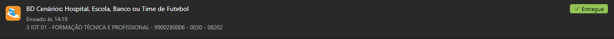
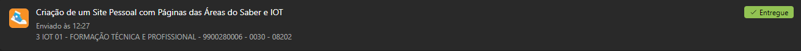

Internet das coisas- Professor Glauco
Atividade do boné
O boné visa a inclusão de pessoas com deficiência visual, ele visa a comunicação das luzes ou do som para a pessoa ter um bom entendimento sobre. Ou seja, a inclusão de pessoas que estão dentro da sociedade como um todo. Além de tudo, esse boné utiliza da lógica do próprio programa e as medidas em geral, como a distância e a luminosidade.

Atividade do carrinho
Criamos um carrinho automático do zero, e utilizamos diversos materiais disponibilizados pelo professor. Sendo alguns deles: Placa de arduíno, fios, rodas, uma placa que uilizamos como a bse do carrinho, sensores, dentre outras coisas.
Atividade do lixo automático
Nessa última atividade construimos um lixo automático do zero. Ele basicamente abria com sons como palma e assobio, ou quando alguém chega perto ou algo do tipo. Ele basicamente facilita e diminui o tempo de uso, tornando assim a atividade mais prática.
Atividade do piano luminoso
Nessa última atividade fizemos a montagem de um piano luminoso, onde utilizamos de uma placa, alguns fios, leds,dentre outras coisas que ajudaram não só no som, como na luminosidade também.
Segue alguns vídeos dos projetos feitos em sala.
Primeira tarefa favorta: 
Segunda tarefa favorta: 